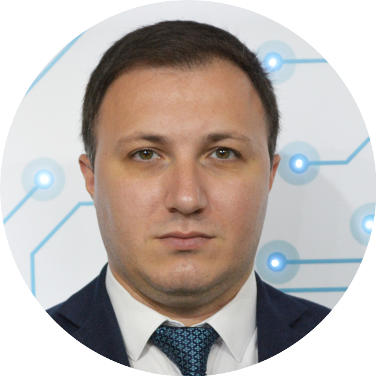

Mushfiq Ismayilov,PMP®

Project Manager
Collaborative and multi-skilled Project Manager with more than 7 years of
experience, owning all stages of project lifecycle from initiating through
monitoring and closing. Bilingual with reputation for working successfully
with clients and peers. Drove complex projects through to completion
within deadline and budget.
Contact details:
Email: ismayilov.mushviq@gmail.com
Address: Qara Qarayev 112, 44 Baku, Azerbaijan
Phone: +994502063077
LinkedIn profile: Mushfiq Ismayilov
Experience:
Project Manager
Company: Innovation and Digital Development Agency
-
Managing projects related with Open Data, Electronic signatures, AI Lab.
-
Defining digital transformation strategy of governmental services.
-
Plan projects and control all stakeholders, keeping them up to date
about projects.
- Strategizing and leading digital transformation roadmap.
- Understanding end-to-end view of client’s technical environment.
-
Manage overall digital transformation work plan, conduct weekly status
reporting and identify issues along with managing risks.
|
| October 2018 - August 2022 |
Project Manager
Company: EGOV Development Center
-
Managing projects related with asanpay.az, Central Information System,
State Advertisement Agency`s Permission System, Licenses and Permits
Portal of Ministry of Economics, “Yolumuz Qarabağa”.
-
Creating reports of progress, including detailed information and
estimated completion dates
- Managing development team
- Communicate with organizations
- Preparing presentations for all stakeholders
- Detailing project scope, progress and results
-
Updating project plans based on changing objectives, specifications and
staff availability
-
Collaborating with cross-functional teams to complete projects on time
- Producing status reports for customers and senior management
|
| April 2016 - October 2018 |
Project Manager
Company: "F5" LLC
- Managing projects related with ASAN Pay Terminals and portal
- Coordinating companies participating in the project
- Ensuring that project is delivered on-time, within scope
- Performing risk management to minimize project risks
- Managing changes to the project scope and schedule
- Creating and maintaining project documentation.
- Detailing project scope, progress and results
-
Completing full-scale project plans, including overseeing engineering
activities and design processes
|
| August 2013 - December 2015 |
IT Specialist
Company: NBC Bank
-
Installing, configuring and managing windows-based servers such as
Windows Server 2008R2, Windows Server 2012 and hardware such as HP, IBM,
DELL
-
Installing, configuring and managing routers and switches (such as CISCO
and HP)
- Virtualization (VMWARE ESXI)
- SQL reporting
-
Configuring and managing Kerio Win Route Firewall and Kerio Connect
- Installing and configuring Linux Server such as Red Hat
- Installing and configuring Oracle Database
-
Managing money transfer systems such as Zolotaya Korona, Blizko, Migom,
Western Union, Leader, Contact
|
| December 2011 - August 2013 |
IT Engineer
Company: Azerbaijan State Railways
-
Installing, configuring and managing windows server 2003 and 2008
servers
-
Supporting user problems such as domain, printer, computer, laptop
failures
- Provide users with internet, network and mail access
-
Analyze network traffic and failures using PRTG network monitoring
system
-
Studied network security logs to identify and eliminate outside and
internal threats
-
Provided exemplary helpdesk service and support to assist customers
Education
Master of Science in E-Governance
Azerbaijan State Oil and Industry University
Simultaneous interpretation
Baku Eurasian University
Languages
| English |
| C1 |
| Russian |
| C1 |
| Arabic |
| Level 3 |
Skills
- Project goals and milestones
- Issue and conflict resolution
- Leadership
- Collaboration
- Active Listening
- Analytical thinking
- Workflow planning
- Root cause analysis
- SQL
- HTML & CSS
Training, Courses & Certifications
PM Academy - PMI-ACP
PMP® – Project Management Professional
ISPO – International Scrum Product Owner
CCNP - Cisco Certified Network Professional
Cisco CCNA Routing and switching
MCITP - Microsoft Certified Information Technology Professional
IELTS – Score 7